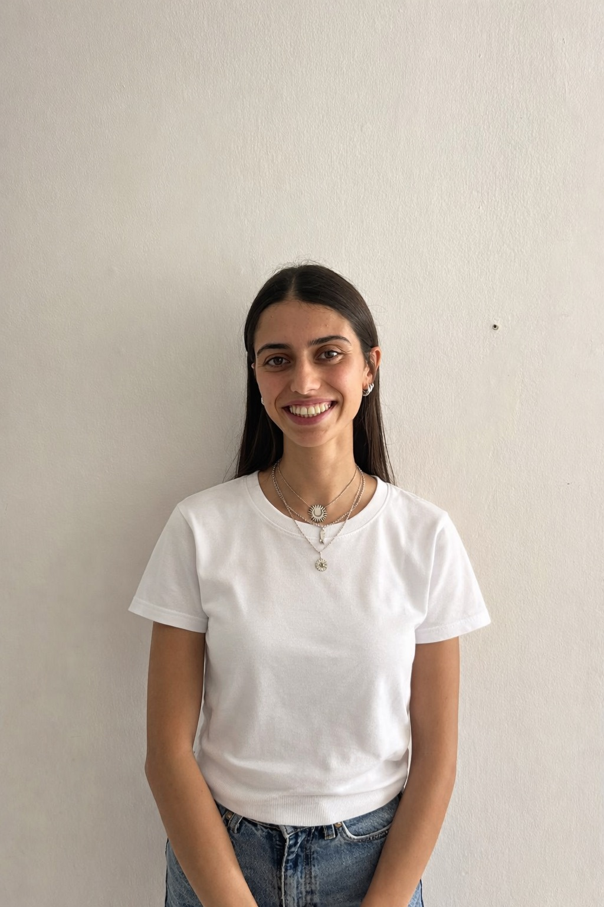

My Resume

Summary
Third year student in information system managment in Ben Gurion university in Beer Sheva
Education
- Ben-Gurion University | 2024-present
B.A. in Information Systems Management
- “Ironi Yud Dalet” High School | 2013-2019
Majored in Computer Science and Chemistry
Military
- Intelligence Training Commander - Israeli Navy
Completed the Commanders Course and served as a training commander for new
intelligence analysts.
- Intelligence Analyst - Israeli Navy
Conducted intelligence research and analysis using intelligence systems and tools.
Volunteering Experience
Shevet Dan, Tel aviv:
- Training Coordinator (Merakezet Hadracha)
- Volunteer Instructor,
"On" School (Special Education)
Skills
Technical Skills
- Java
- Python
- SQL
- Excel
Other